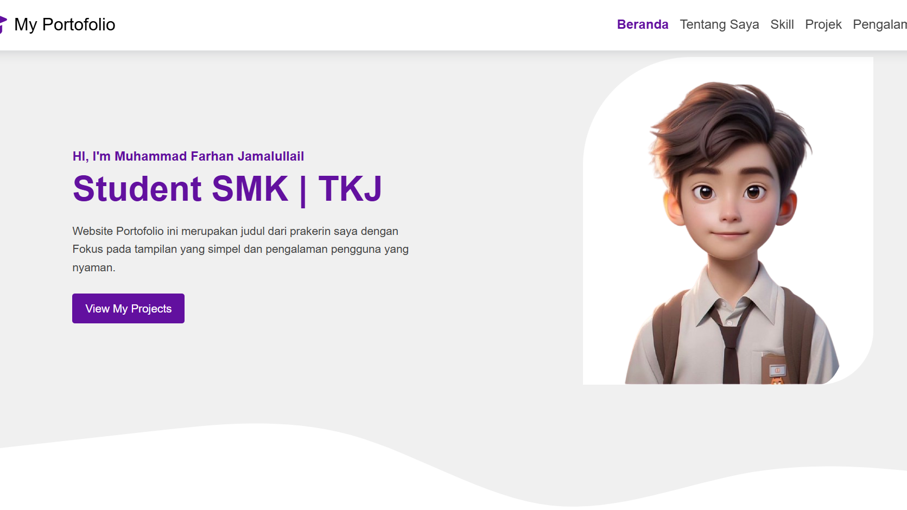
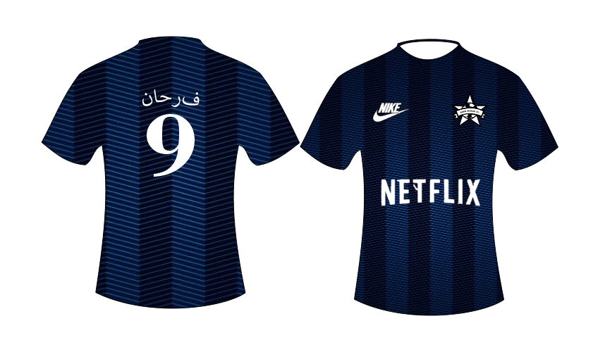

ProjectSaya
Ini Adalah beberapa Hard skill saya terkait dengan jurusan yang saya duduki sekarang

Website Portofolio

Tabel Jadwal Prakerin

Website Portofolio ini merupakan judul dari prakerin saya dengan Fokus pada tampilan yang simpel dan pengalaman pengguna yang nyaman.
View My ProjectsNama saya M. Farhan Jamalullail, seorang santri di Pondok Pesantren Babussalam Al-Firdaus, Jawa Timur. Saat ini saya berusia 18 tahun dan sedang berproses untuk terus belajar, memperbaiki diri, dan menambah pengalaman.
Saya memiliki motivasi yang kuat untuk membahagiakan kedua orang tua melalui pendidikan, karya, dan usaha yang bermanfaat. Bagi saya, menjadi pribadi yang disiplin, berakhlak, dan terus berkembang adalah hal yang penting untuk meraih masa depan yang lebih baik.
Ini adalah beberapa soft skill terkait dengan kepribadian saya
Ini Adalah beberapa Hard skill saya terkait dengan jurusan yang saya duduki sekarang
Ini Adalah beberapa Hard skill saya terkait dengan jurusan yang saya duduki sekarang
Ini Adalah beberapa Hard skill saya terkait dengan jurusan yang saya duduki sekarang
Mewakili TPQ dalam lomba cerdas cermat tingkat se-kecamatan dengan materi seputar pengetahuan keagamaan, hafalan, dan pengetahuan umum. Berperan sebagai bagian dari tim yang menjawab soal dengan cepat dan tepat melalui koordinasi yang baik.
Bertanggung jawab dalam merancang dan menjalankan program keagamaan di sekolah, seperti kegiatan kajian, peringatan hari besar Islam, dan koordinasi acara kerohanian.
Berperan dalam membantu pelaksanaan kegiatan qurban di Pondok Pesantren, mulai dari persiapan sampai akhir. membantu mengulitin dan memotong daging, serta memastikan distribusi berjalan rapi dan merata.
Aktif mengikuti kegiatan Rohis yang berfokus pada pembinaan akhlak, peningkatan pemahaman keislaman, serta pembiasaan ibadah di lingkungan sekolah. Terlibat dalam kegiatan seperti kajian rutin, pelatihan baca Al-Qur’an, peringatan hari besar Islam, dan berbagai program pembinaan rohani lainnya.